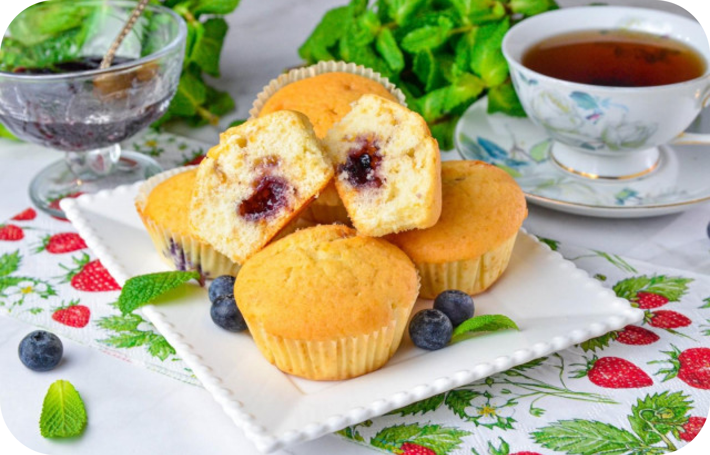

Пышные, мягкие, воздушные, с джемом и ягодами! Маффины с начинкой готовятся очень просто, набор ингредиентов для них доступен и не дорог. Тесто само по себе удачное, но добавление джема, варенья или ягод делает маффины интереснее, сочнее и вкуснее.
